Efficient JavaScript
Who Am I?
- 2007 CTO cember.net got acquired by Xing, yay!
- 2008 Project Director livego.com gone to deadpool, R.I.P. :(
- 2011 VP of Technology grou.ps still alive ;)
- 2012 Mobile Engineer Jive Software that's what I do right now.
- J4V45cR1p7 h4x0R o2js.com that's my blog!
Outline
- Overview: Front-End Development Best Practices
- Useful JavaScript Patterns & Practices
- A ReIntroduction to JavaScript Memory Leaks
- Profiling JavaScript Applications
- Practice Time: Step by Step Optimizing a Sample Application
- Q&A
- eval is evil
- Avoid try/catch
- Avoid with
- Avoid $.each and for/in loops
- Use String Builders
- Primitive operations are faster than function calls
- Minimize DOM Size and Depth
- Minimize DOM Repaints and Reflows (cache DOM calculations)
- Keep Your Markup Clean (avoid inline & embedded code)
- Purge Anything that is not Visible (from DOM AND from Memory)
- Async Load Third-Party Widgets
- Smoothness/Speed Tradeoff
- Load Lazily; Execute Lazily
- Do Not Wait for Server Feedback
- Styles to the Top, Scripts to the Bottom
- Far Future Expires Header
- Minify Your Assets
- Combine Multiple Assets
- CSS Sprites, Image Data URIs, Image Optimization
- Cache (client-side and server-side) & Gzip
Best Practices (Macro)
- Make JavaScript and CSS External
- Make AJAX Cacheable
- Use a Strict REST Architecture
- Reduce Cookie Size
- Use Cookie-Free Domains for Components
- Make favicon.ico Small and Cacheable

Best Practices (Development)
- Utilize Diagnostic Tools (YSlow, Chrome Dev Tools)
- Know Thy Frameworks
- Live in TDD (jasmine, jshint, istanbul)
- One Click Publish, Automation, and CI
(git pre-commit hooks, grunt, jenkins)

Common Patterns & Practices
Patterns & Practices (Building Blocks)
- Prototypal Inheritance
- Model-View-Whatever (MVC, MVP, MVVM…)
- Module ♥ / AMD
- Continuation Passing Style
- Mixin / Decorator / Dependency Injection
- Façade / PubSub ♥ / Mediator
- Flow Control / Deferreds / Promises ♥
Patterns & Practices (More)
- Chaining
- Factory
- Composite
- Strategy
- Command / Chain of Responsibility
- Bridge
- Flyweight
- Iterator
- Null Object
- Singleton
- and the list goes on…
Using Patterns… Because You Can

Using Patterns…
Without Knowing the Liabilities
Think Simple
- E = MC2
- Simplicity is the Ultimate Sophistication
- When in doubt, KISS.
JavaScript Memory Leaks
Memory Leaks (OverView)
- How JavaScript Garbage Collector Works
- Memory Leaks in Older Browsers (read: Internet Explorer)
- Memory Leaks Related to Timers
- Memory Leaks Related to Debug Console
- Size Does Matter
- Structural Leaks
Garbage Collection *
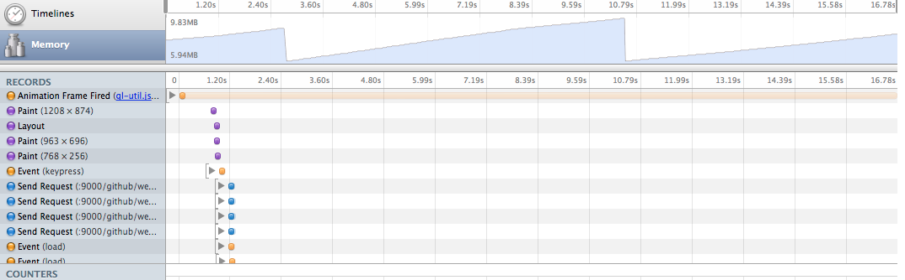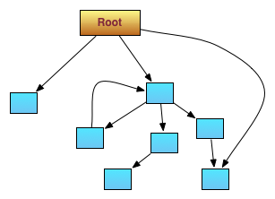
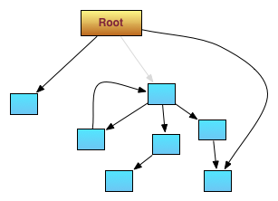
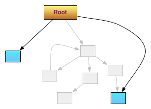
Older Browsers – Event Handler Leak (IE < 8)
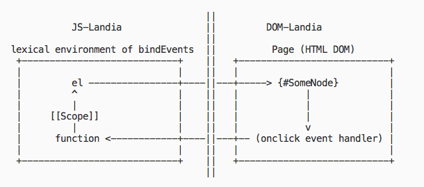
Older Browsers – XHR Leak (IE < 9) *
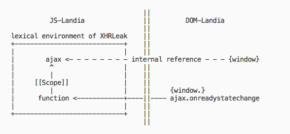
Structural Leaks *
- These Are NOT Because of the Browser Bugs
- They Are the Most Common Leaks
- Handlers, Registries, Controllers, Managers, Mediators, Observables Are Leaker Candidates
- Leaks are in the Nature of Event-Based Architectures
- Closures and Modules Are Controlled Memory Leaks
Good kids clean their mess!
Structural Leaks (jQuery)*
//(1)
elem[jQuery.expando] = ++jQuery.uuid;
//(2)
jQuery.cache[elem[jQuery.expando]]['property'] = 'value';
✓ DOM never references jQuery objects directly.
∴ Removing jQuery elements using native methods can leak.
Beware of the Console Leaks *
Garbage-Collector-Friendly Code *
- Use Variables With a Proper Scope
- Unbind Events
- Clear Timers
- Invalidate Cache
Profiling JavaScript Applications

Profiling JavaScript Applications
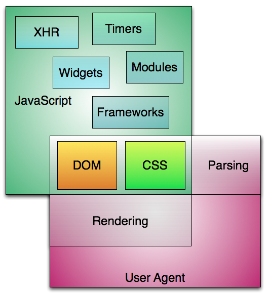
Demo
Agenda
- Creating a Logical Folder Structure
- Configuring the Builder, Linter, and Tests
(grunt, jshint, jasmine, istanbul) - Profiling the Application & Fixing Leaks
- Localizing the Application
- Decoupling Modules Using Custom Events (PubSubHub)
- Adding a Mediator (PubSub and Hub)
- Implementing DOM Event Delegation
- Improving Render Performance
- Code Coverage Analysis
- You Need Testing
Folder Structure *
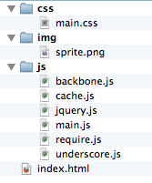 ⇨ 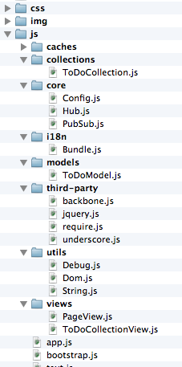
Configuring Grunt *
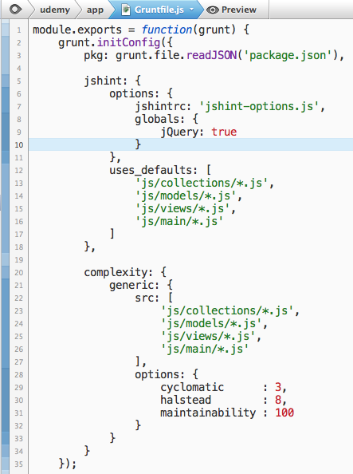
Configuring JS Hint
Configuring Jasmine
Configuring Istanbul
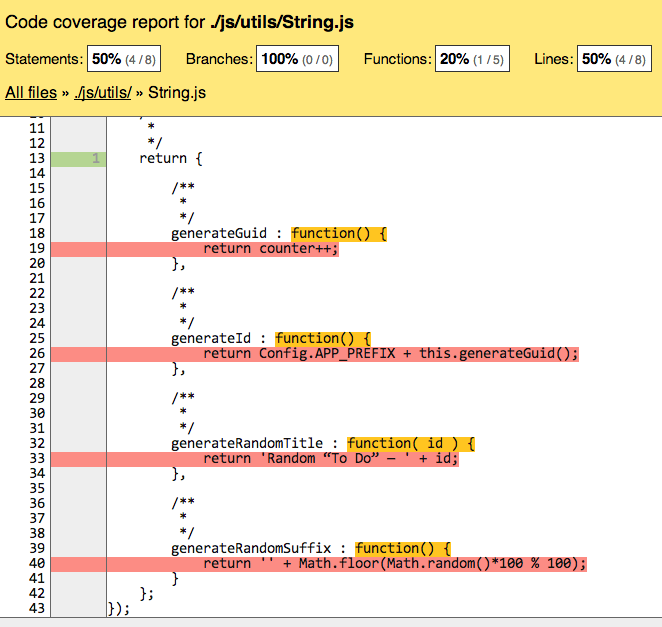
Profiling
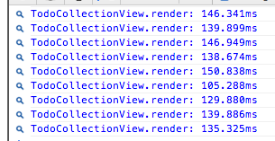

Fixing Memory Leaks
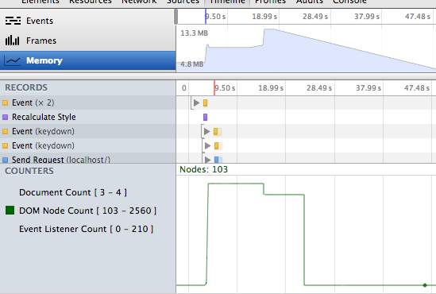
Localization
PubSubHub

Adding a Mediator
PubSub
+
Hub
DOM Event Delegation
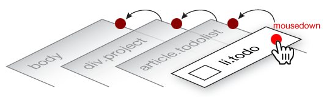
Improving Render Performance
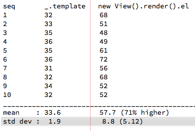
Code Coverage Analysis
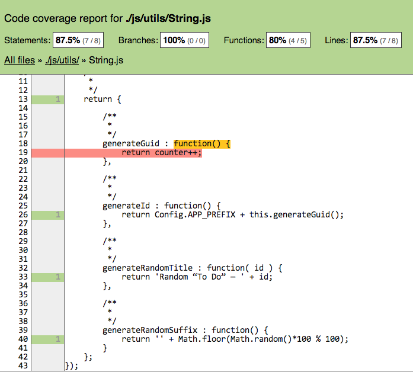
Unit Testing
Test State (NOT User Interface, NOT Interactions)
Assemble
Act
Assert
Deployment
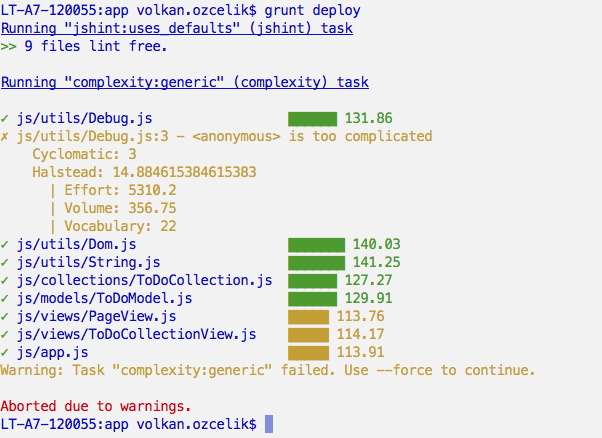
Thank You
¯\_(ツ)_/¯
Questions?